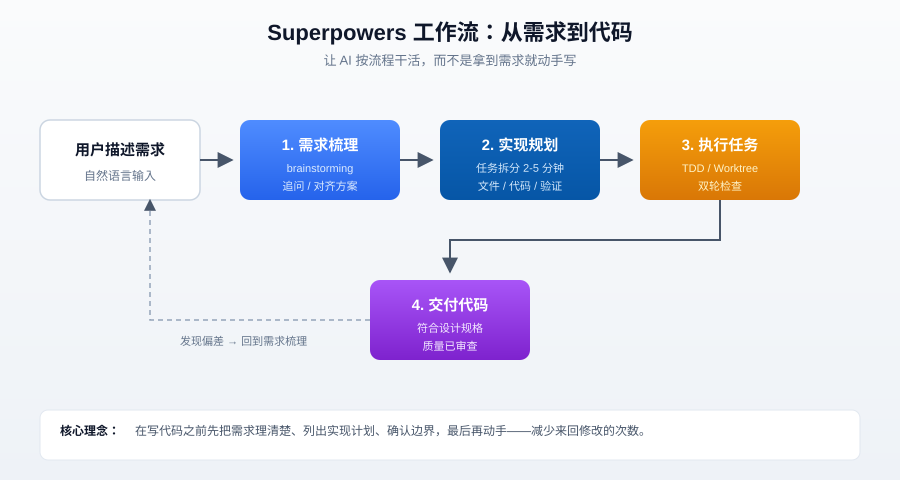
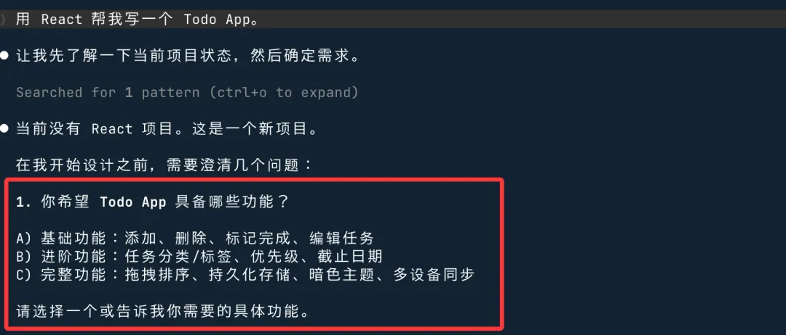

Superpowers
Superpowers es un paquete de habilidades de flujo de desarrollo para herramientas de programación con IA. Hace que la IA organice los requisitos y elabore un plan antes de escribir código, reduciendo la cantidad de revisiones repetidas.
El dilema común de la IA al escribir código
Después de describir los requisitos, la IA empieza a escribir código de inmediato, y solo después de cientos de líneas se da cuenta de que la dirección estaba equivocada: casos límite no manejados, estilo de interfaz incompatible, lógica clave mal entendida.
Luego hay que modificar de un lado a otro, y a veces el tiempo dedicado a corregir el rumbo es incluso mayor que el de escribir el código inicial.
Lo más problemático son los requisitos complejos, que involucran múltiples módulos y necesitan implementarse por fases. La IA se desvía mientras escribe, y cuando te das cuenta ya ha modificado muchos archivos, haciendo difícil revertir.
La raíz del problema
El comportamiento predeterminado de las herramientas de programación con IA al recibir requisitos esescribir código directamente。
Para tareas simples esto no es problema, pero para requisitos un poco más complejos, "escribir directamente" se salta un paso clave:entender bien los requisitos。
Toda ambigüedad en los requisitos acaba convirtiéndose en problemas en el código. La IA no pregunta activamente ni tiene un plan de implementación sistemático; simplemente avanza según su comprensión actual y corrige sobre la marcha cuando se desvía.
Si se puede hacer que la IA aclare los requisitos, enumere el plan de implementación y confirme los límites antes de escribir código, y que empiece a trabajar solo al final, todo el proceso será mucho más estable.
Qué es Superpowers
Superpowers es un conjunto para herramientas de programación con IApaquete de habilidades de flujo de desarrollo。
Organiza los pasos clave del desarrollo de software — análisis de requisitos, planificación de implementación, desarrollo guiado por pruebas, revisión de código, gestión de ramas — en archivos de habilidades. Una vez instalados en la herramienta de IA, esta activa automáticamente el flujo de trabajo correspondiente en el momento adecuado, sin necesidad de indicaciones manuales cada vez.
En una frase:Instala una metodología de desarrollo a la IA para que trabaje según un proceso, no que empiece a escribir en cuanto recibe los requisitos.。
| Proyecto | Información |
|---|---|
| Repositorio de GitHub | https://github.com/obra/superpowers |
| Licencia | MIT |
| Herramientas compatibles | Claude Code、Cursor、Codex CLI、Codex App、Gemini CLI、GitHub Copilot CLI |
Descripción general del flujo de trabajo
El flujo principal de Superpowers se divide en cuatro fases, cada una con objetivos y resultados claros. La IA no se salta ningún paso.

| Fase | Nombre | Qué hace | Resultado |
|---|---|---|---|
| 1 | Análisis de requisitos | La IA hace preguntas a la inversa, aclara los puntos ambiguos y muestra el diseño en secciones para su confirmación. | Documento de requisitos confirmado |
| 2 | Planificación de implementación | Divide el trabajo en tareas concretas de 2 a 5 minutos; cada tarea incluye archivos, código y método de verificación. | Lista de tareas ejecutable |
| 3 | Ejecutar tareas | Ejecuta las tareas una por una; después de completar cada tarea, realiza una doble verificación (especificación + calidad). | Código verificado |
| 4 | Entregar código | Confirma que todas las tareas estén completas y que el código cumpla con las especificaciones de diseño y los estándares de calidad. | Código entregable |
Métodos de instalación
Cada herramienta de programación con IA tiene un método de instalación distinto. Elige el método correspondiente según la herramienta que uses.
Claude Code (método recomendado)
Claude Code se puede instalar directamente desde el mercado oficial de complementos.
# 从官方插件市场安装（推荐） /plugin install superpowers@claude-plugins-official
También se puede instalar desde el propio mercado de Superpowers.
# 添加 Superpowers 市场 /plugin marketplace add obra/superpowers-marketplace # 从 Superpowers 市场安装 /plugin install superpowers@superpowers-marketplace
Cursor
En el cuadro de diálogo Agent de Cursor, introduce un comando para instalarlo.
# 在 Agent 对话框里输入 /add-plugin superpowers
También puedes buscar en el mercado de complementossuperpowerse instalarlo.
Codex CLI
# 打开插件管理界面 /plugins # 搜索 superpowers，选择 Install Plugin
Gemini CLI
# 通过扩展安装 gemini extensions install https://github.com/obra/superpowers
Cada herramienta debe instalarse por separado; instalarlo en Claude Code no significa que también esté en Cursor.
| Herramienta | Método de instalación | ¿Se necesita un mercado adicional? |
|---|---|---|
| Claude Code | /plugin install | Basta con el mercado oficial; también se puede usar el mercado de Superpowers |
| Cursor | /add-plugino buscar en el mercado de complementos | No |
| Codex CLI | /pluginsInstalar mediante búsqueda en la interfaz | No |
| Gemini CLI | gemini extensions install | No |
Experiencia real después de la instalación
Después de la instalación, no necesitas aprender comandos nuevos ni cambiar tus hábitos de trabajo. Describe los requisitos como siempre; Superpowers interviene automáticamente en segundo plano.
Al iniciar una nueva función
Después de que describas los requisitos, la IAnoempieza a escribir código de inmediato.
Primero te hace algunas preguntas a la inversa, aclara los puntos ambiguos y te muestra el diseño en secciones para que lo confirmes.
Esta fase se llamabrainstormingy su objetivo es alinear los requisitos antes de empezar. Solo después de tu confirmación, la IA pasa al siguiente paso.
Entrando en la fase de implementación
Una vez confirmados los requisitos, la IA genera un plan de implementación y divide el trabajo en tareas concretas de 2 a 5 minutos cada una.
Cada tarea incluye: qué archivos están involucrados, qué código escribir y cómo verificar.
El nivel de detalle del plan llega al punto de que "un ingeniero junior puede ejecutarlo con esta descripción". Este diseño busca que el subagente (subagent) pueda ejecutar cada paso de manera confiable, reduciendo los desvíos de comprensión durante la ejecución.
Fase de ejecución
Después de confirmar el plan, la IA ejecuta las tareas una por una.
Al completar cada tarea, se realizauna doble verificación: primero se comprueba si cumple con las especificaciones de diseño y luego la calidad del código.
Si se encuentra un problema, se resuelve en la tarea actual; no se avanza con problemas pendientes.
No necesitas supervisar todo el proceso de ejecución; deja que la IA avance. Si se queda atascada, se detendrá y te buscará.
Verificación de la instalación
Por ejemplo, escribimos en Claude Code:
Diseña una página promocional atractiva para un producto de teléfono móvil.
Veremos superpowers:brainstorming, lo que indica que la instalación fue exitosa:

Un escenario típico para principiantes: desarrollar una app Todo desde cero
Supongamos que queremos implementar una aplicación Todo que admita crear, leer, actualizar y eliminar (React + almacenamiento local).
Método tradicional de indicación directa:
用 React 帮我写一个 Todo App。
La IA suele generar una gran cantidad de código de una sola vez; en apariencia es funcional, pero en realidad puede tener los siguientes problemas:
- Gestión de estado no estandarizada
- Faltan pruebas unitarias
- Casos límite (como listas vacías, operaciones concurrentes) sin manejar
- Modificar un lugar fácilmente provoca otros bugs
- El resultado suele ser un código difícil de mantener y un alto costo en iteraciones posteriores.
El enfoque estructurado de Superpowers es completamente diferente: no deja que la IA entre inmediatamente en la fase de codificación, sino que avanza según los siguientes pasos:

Explicación detallada del flujo de trabajo principal
Superpowers ofrece tres flujos de trabajo principales, que cubren diferentes aspectos del desarrollo.
Desarrollo guiado por pruebas (TDD)
test-driven-developmentLa habilidad obliga a la IA a seguir el orden RED-GREEN-REFACTOR.
Primero escribe una prueba que falle, observa cómo falla, luego escribe el código mínimo para que pase y por último refactoriza.
Si la IA escribe código antes de escribir la prueba, esta habilidad le pedirá que lo borre y vuelva a empezar.
| Paso | Nombre | Qué hacer |
|---|---|---|
| RED | Escribir prueba fallida | Escribir primero un caso de prueba que falle actualmente, definiendo el comportamiento esperado. |
| GREEN | Escribir código mínimo para pasar | Escribir solo el código mínimo necesario para que la prueba pase, sin más. |
| REFACTOR | Refactorizar | Optimizar la estructura del código con la protección de las pruebas, asegurando que sigan pasando. |
Para proyectos sin hábito de TDD, este flujo puede resultar un poco incómodo, pero ciertamente reduce los casos de descubrir bugs tarde y tener que volver atrás.
Aislamiento con Git Worktree
using-git-worktreesDespués de confirmar el diseño, crea automáticamente una rama de trabajo aislada.
Así, las modificaciones de código de la IA no contaminan directamente la rama principal; es útil en paralelismo de múltiples tareas o cuando se necesita revertir cambios.
Git Worktree es una función nativa de Git que te permite extraer varias ramas del mismo repositorio a diferentes directorios a la vez; comparado congit stash + git checkoutes más limpio.
Depuración sistemática
systematic-debuggingLa habilidad hace que la IA siga un proceso de resolución de problemas de 4 pasos cuando se encuentra con un problema, en lugar de adivinar.
Cuando te encuentres con un error, primero localiza la causa raíz y luego resuélvelo, en lugar de empezar directamente a modificar el código para probar.
| Pasos | Qué hacer | Por qué |
|---|---|---|
| 1. Reproducir el problema | Confirma que se puede reproducir de forma estable y registra las condiciones de activación. | Un bug que no se puede reproducir no permite verificar la corrección. |
| 2. Localizar la causa raíz | Reduce gradualmente el alcance hasta encontrar la línea de código específica que causa el problema. | Una corrección que solo trata los síntomas sin abordar la causa raíz puede introducir nuevos problemas. |
| 3. Implementar la corrección | Modifica el código según la causa raíz. | Minimiza el alcance de los cambios. |
| 4. Verificar la corrección | Confirma que el problema se ha resuelto y que no se han introducido nuevos problemas. | Asegura que la corrección sea efectiva. |
Algunos puntos a tener en cuenta antes de usar
El proceso se alarga
Después de instalar Superpowers, incluso los requisitos simples pasan primero por el análisis de requisitos y la planificación antes de empezar a escribir código.
Si solo se trata de corregir un pequeño bug o añadir una línea de configuración, este proceso puede parecer innecesario.
Superpowers es adecuado para el desarrollo de funcionalidades con cierta complejidad. Para tareas simples, basta con dejar que la IA escriba directamente, sin necesidad de aplicar todo este proceso.
Requiere tu participación en la discusión previa
brainstormingEsta fase requiere que respondas preguntas y confirmes el plan.
Si lo que piensas es "dárselo a la IA para que lo haga todo automáticamente", este diseño te resultará incómodo.
El posicionamiento de Superpowers esdesarrollo colaborativo entre humanos e IA, no la generación automática de código.
La experiencia varía según la herramienta
El README menciona que Claude puede trabajar durante dos horas sin desviarse del plan, pero este rendimiento varía según la herramienta, el proyecto y la complejidad de la tarea; la experiencia real puede diferir.
| Puntos a tener en cuenta | Descripción | Escenarios aplicables |
|---|---|---|
| Proceso más largo | Los requisitos simples también se analizan antes de empezar | Desarrollo de funcionalidades de complejidad media o superior |
| Requiere participación en discusiones | La fase de brainstorming requiere que confirmes el plan | Desarrolladores dispuestos a dedicar tiempo a la alineación inicial |
| Diferencias de experiencia | El rendimiento varía según la herramienta y el proyecto | Todos los usuarios deben conocerlo |